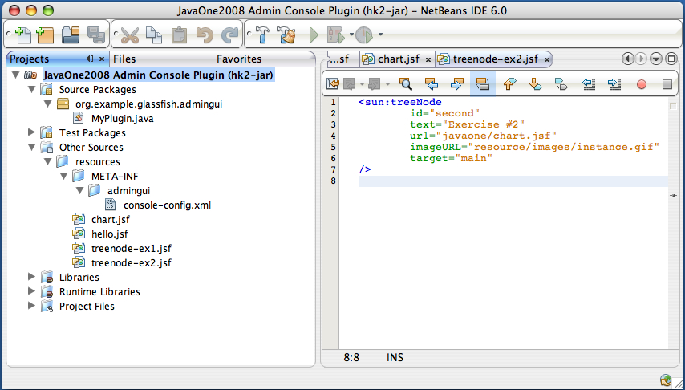

Exercise 3: Templating your Plugin
Introduction:
In this exercise, you will be customizing your JSF page by using JSFTemplating. TBD
Background Information:
TBD: More info relating to Templating. TBD
Step-by-Step Instructions
% mv gfplugin/myplugin gfplugin/myplugin.save % mkdir gfplugin/myplugin <== TBD I should combine this and next command into one % cp -R gfplugin/solution/myplugin/ex2 gfplugin/myplugin
Step-by-Step Instructions:
Overview:
In this excercise, you will complete the following:
- Create a JMaki Charting page within a Template
You will create a JSFTemplating JavaServer Faces pages that contains a JMaki Charting component with a template.
- Modify your console-config.xml
You will modify your configuration file to add a new IntegrationPoint
- Specify your Tree Node layout
In this step you will add the file "treenode-ex3.jsf" for specifying the new tree node that points to the customized JMaki Charting page
- Build and Install your first GlassFish v3 plugin
In this step you will install and test your plugin.
Steps:
3-A Create a JMaki Charting page with a TemplateYou should have myplugin project still open in
NetBeans. If you have closed the project, follow these steps to open
it again. More detailed instructions can be found in exercise 1-A
- Launch NetBeans IDE 6.0
- Open plugin module
- Choose Open Project from the File menu.
- Browse to <lab4520_lab>/gfplugin and select myplugin module
- Press the Open Project button
- Create your JSF page that shows the JMaki chart in a template
Step-by-step instructions in NetBeans:-
Select Other Sources -> resources.
- Create an empty file named 'chart3.jsf'
-
Edit 'chart3.jsf'.
In this step, you will create a JSF page based on a template, and add the JMaki Charting component to it. Notice that the only change in this file when compared to chart.jsf in exercise #2 is add the template in the beginning of the file.
<!composition template="templates/javaOneTemplate.tpl"> <!define name="content"> <sun:page> <!beforeCreate getjMakiValues(values=>$attribute{pievalues}); getjMakiValues(values=>$attribute{gryvalues}); getjMakiValues(values=>$attribute{bluvalues}); getjMakiValues(values=>$attribute{pnkvalues}); getjMakiValues(values=>$attribute{redvalues}); /> <sun:html> <sun:markup tag="head"> <sun:link url="/theme/com/sun/webui/jsf/suntheme/css/css_master.css" /> <sun:markup tag="title"> <staticText value="jMaki Charting!" /> </sun:markup> <sun:script url="/resources/jmaki.js" /> <sun:script url="/theme/META-INF/dojo/dojo.js" /> <sun:script url="/theme/META-INF/json/json.js" /> <sun:script url="/theme/META-INF/prototype/prototype.js" /> <sun:script url="/theme/META-INF/com_sun_faces_ajax.js" /> </sun:markup> <sun:markup tag="body"> <sun:form id="form"> <sun:markup tag="div" style="width:380px; height: 310px;"> <sun:dropDown labels={"jmaki.charting.yahoo.pie" "jmaki.charting.google.pie" "jmaki.charting.plotkit.pie"} value="#{requestScope.chart1}"> <!beforeCreate setAttribute(key="chart1", value="jmaki.charting.google.pie"); /> </sun:dropDown> <sun:button value=" Refresh " /> <jmaki:widget name="#{requestScope.chart1}" args="{colorScheme:2}" value="{ xAxis : { title : 'Months', labels : [ {label : 'January'}, {label : 'February'}, {label : 'March'}, {label : 'April'}, {label : 'May'}, {label : 'June'}, {label : 'July'}, {label : 'August'}, {label : 'September'}, {label : 'October'}, {label : 'November'}, {label : 'December'} ] }, data : [ { label : 'Set 1', values : $attribute{pievalues} } ] }"/> </sun:markup> <sun:dropDown labels={"jmaki.charting.plotkit.area" "jmaki.charting.plotkit.line" "jmaki.charting.plotkit.bar" "jmaki.charting.google.area" "jmaki.charting.google.bar" "jmaki.charting.google.line" "jmaki.charting.yahoo.line" "jmaki.charting.yahoo.bar" "jmaki.charting.dojo.bar" "jmaki.charting.dojo.line" "jmaki.charting.dojo.area"} value="#{requestScope.chart2}"> <!beforeCreate setAttribute(key="chart2", value="jmaki.charting.yahoo.bar"); /> </sun:dropDown> <sun:button value=" Refresh " /> <sun:markup tag="div" style="width: 500px; height: 280px;"> <jmaki:widget name="#{requestScope.chart2}" value="{ xAxis : { title : 'Months', labels : [{ label : 'January'}, { label : 'February'}, { label : 'March'}, { label : 'April'}, { label : 'May'}, { label : 'June'}, { label : 'July'}, { label : 'August'}, { label : 'September'}, { label : 'October'}, { label : 'November'}, { label : 'December'} ] }, yAxis : { title : 'Temperature', labels : [{ label : '0', value : 0}, { label : '10s', value : 10}, { label : '20s', value : 20}, { label : '30s', value : 30}, { label : '40s', value : 40}, { label : '50s', value : 50} ] }, data : [ {label : 'Gray Series', values : $attribute{gryvalues} }, {label : 'Pink Series', values : $attribute{pnkvalues} }, {label : 'Blue Series', values : $attribute{bluvalues} }, {label : 'Red Series', values : $attribute{redvalues} } ] }"/> </sun:markup> </sun:form> </sun:markup> </sun:html> </sun:page> </define> </composition>

Figure 3-2: Edit Chart3.jsf -
Select Other Sources -> resources.
Here is what your NetBeans Projects tab should show

Figure 3-1: opened myplugin module to start exercise 3.
3-B. Modify your console-config.xml
You now need to add an integration point for plugging the exercise-3 tree node
to the Administration Console.
Just like in the previous exercise, you need to edit it and add the third integration point. You want the exercise-3 tree node to be under the JavaOne tree node.
So, we specify the parentId to be 'j1root'. You can refer to
treenode-ex1.jsf to see this. You also need to create the file
treenode-ex3.jsf which will point to the JSF jMaki chart page.
- Double click on Other Sources ->resources ->META-INF ->admingui -> console-config.xml
-
Edit the file and add the following integration point. You can refer to Solution 3 for the entire file.
<integration-point id="Third" type="tree" priority="300" parentId="j1root" content="treenode-ex3.jsf" />

Figure 3-3: Modify console-config.xml
3-C. Specify your Tree Node layout
You will need to create a new file "exercise-3.jsf" which is specfied as the "content" of your third integration point.
Step-by-step instructions in NetBeans:
-
Select Other Sources -> resources
- Create an empty file named 'treenode-ex3.jsf' under resources
-
Edit treenode-ex3.jsf to specify the information regarding this second tree node.
<sun:treeNode
id="third"
text="Exercise #3"
url="javaone/chart3.jsf"
imageURL="resource/images/instance.gif"
target="main"
/>

Figure 3-4: Edit of treenode-ex3.jsf